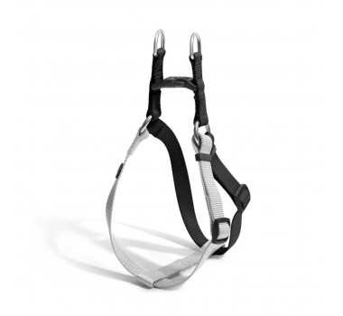
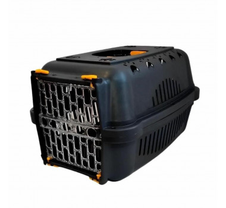
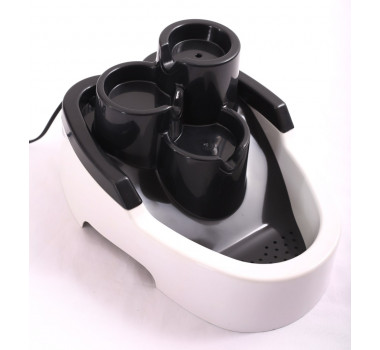

As vacinas para cães desempenham um papel fundamental para a saúde e bem estar dos pets. Com esse gesto de carinho, os tutores ajudam a prevenir doenças graves, que podem surgir em qualquer fase da vida do animal e botar em risco toda a família.
-Principais vacinas para cães
Vacina Polivalente (V10)
A vacina polivalente V10 protege o seu cão e a sua família de doenças contagiosas e zoonoses que podem levar a óbito. Ela é composta de 3 ou 4 doses iniciais. A primeira, deve ser aplicada entre os primeiros 42 a 45 dias de vida do filhote. As doses seguintes devem ser realizadas com intervalos de 21 a 28 dias.
A Polivalente V10 protege contra:
Cinomose;
Parvovirose;
Coronavirose;
Hepatite Infecciosa Canina;
Adenovirose;
Parainfluenza Canina;
Leptospirose Canina.
O reforço da vacina polivalente V10 é anual, calculado com base na data da última dose.
Vacina Antirrábica
A raiva é uma doença fatal em praticamente 100% dos casos, tanto em cães como em seres humanos. Ela provoca alterações neurológicas graves e pode ser transmitida dos pets para seus tutores através de arranhões e mordidas.
A primeira dose da vacina antirrábica pode ser aplicada logo na fase de filhotes, a partir dos 3 meses de idade. Já o reforço dessas vacinas para cães devem ser feitos anualmente.
Vacina contra a gripe (Tosse dos Canis)
A tosse dos canis costuma cursar com tosse, coriza, febre e falta de apetite. Por vezes, parece que o cão está engasgado. O quadro pode, inclusive, evoluir para pneumonia, causando uma série de transtornos para toda a família.
A vacina contra a gripe canina pode ser aplicada junto com a segunda dose da vacina polivalente (V10), por volta dos 80 dias de vida do pet. O veterinário deverá definir a necessidade da segunda dose de acordo com o tipo da vacina: injetável ou intranasal. O reforço dessas vacinas para cães devem ser feitos todos os anos.
Vacina contra Giárdia
A giardíase pode provocar diarréia, vômito, apatia e perda de peso. É uma importante zoonose, podendo ser transmitida para as pessoas a partir de animais infectados. A vacina pode ser aplicada a partir dos 2 meses de idade do pet. A segunda dose 3 – 4 semanas após a primeira é essencial para uma proteção adequada. O reforço é anual.
A manutenção regular das condições de higiene dos cães também é um fator muito importante para a prevenção da giardíase.
Vacina contra Leishmaniose
Os cães domésticos são considerados os principais reservatórios da Leishmaniose em áreas urbanas. A partir deles, algumas espécies de mosquitos podem espalhar a doença para toda a família.
A leishmaniose é dividida em dois tipos: visceral ou tegumentar. Em humanos, a doença pode provocar desde feridas na pele e fraqueza, até aumento do baço, do fígado, problemas respiratórios, sangramentos e infecções por conta da queda da imunidade.
As vacinas para cães contra leishmaniose devem ser feitas a partir de 4 meses de idade. O protocolo completo deve ser feito com 3 doses, respeitando o intervalo de 21 dias entre cada aplicação. A revacinação é anual, contada a partir da 1ª dose.
-Acessórios
Peitoral Step Mimo Multilaser Preto e Cinza para Cães
A linha de passeio da Mimo foi desenvolvida para oferecer itens práticos e seguros que tornam o passeio com seu melhor amigo peludo muito mais confortável, seguro e divertido!
O Peitoral Triple Step conta com duas argolas que garantem uma proteção dupla no encaixe da guia e tiras laterais reguláveis para o conforto do seu pet, além de uma fivela que reforça a segurança.
*Indicado para cães de porte pequeno.
Proteção dupla: 2 argolas para encaixar a guia;
Regulável: ajuste o tamanho das tiras laterais;
Tamanho PP.

Caixa Transporte Falcon Black N°1
A Caixa de Transporte é uma novidade de conforto e segurança nas viagens e passeios para o pet. Desenvolvida com plástico reciclado injetado, toda presa com parafusos nas laterais para maior segurança no transporte, ela conta com porta de aço super resistente e elegante. A portinha possui abertura lateral para os dois lados.
Ideal para pets com até 5 Kg.
ESPECIFICAÇÕES
dimensões externas
Comprimento: 45cm
Largura: 32cm
Altura: 27cm

Fonte de Água Durafont Bivolt em Cascata 2,5L - Preta
Os pets bebem até 9x mais água corrente do que a parada, evitando problemas renais e aumentando sua qualidade de vida. A DuraFont possui sistema de filtragem com carvão ativado, diminuindo a acidez da água e mantendo-a sempre fresquinha. Seu reservatório de água tem capacidade para 2,5 litros de água. A cascata com 3 níveis de queda de água para atender os pets de pequeno, médio e grande porte. Com bomba interna bivolt 12v. Ela também possui sistema de regulagem de vazão da água em mínimo, médio e máximo.
ITENS INCLUSOS Sistema de filtragem com carvão ativado. Bomba interna bivolt 12V – com sistema de regulagem de vazão de água em mínimo, médio e máximo.
PESO TOTAL: 1,200KG
